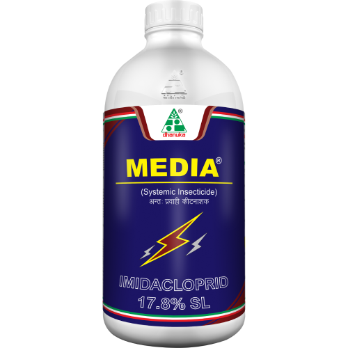

Problems Faced By Farmers
Major Concern for Groundnut farmers are leaf spots (early leafspot and late leaf spot)commonly called as “Tikka” disease cause nearly complete defoliation and yield loss up to 50 per cent or more depending upon disease severity.
| Pests Or Diseases | Recommended Product Solutions |
|---|---|
narrow leaf |
 |
collor rot |
 |
seed rot |
|
stem rot |
|
aphid |
 |
early leaf spot |
 |
Rust |
 |